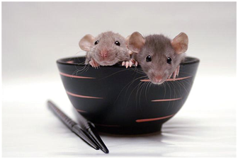
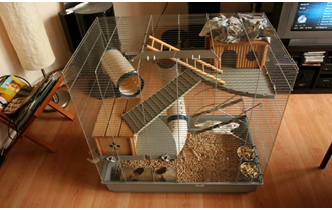
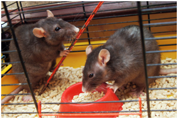

Особенности содержания домашних крыс

В первую очередь важно помнить, несмотря на свои скромные размеры, декоративная крыса — такое же домашнее животное, как собака или кошка, она требует внимания, любви и заботы.
Так как крыса — это прежде всего грызун, выпуская ее на прогулку по дому, помните, что она будет искать, что бы ей можно погрызть.
Так как крыса — это прежде всего грызун, выпуская ее на прогулку по дому, помните, что она будет искать, что бы ей можно погрызть.
Не позволяйте крысе гулять без вашего присмотра, шнуры и провода прячьте и убирайте повыше.
Важной особенностью крыс является специфический запах. Домашние крысы метят территорию своего проживания. Так что, если вы услышали, что крысы не имеют запаха и абсолютно гиппоаллергенны, не принимайте это утверждение на веру.
Как и другие грызуны, декоративные крысы очень не любят сквозняков и боятся прямых солнечных лучшей. Помните об этом, выбирая место для клетки. Оптимальной температурой для содержания домашней крысы считается 18-21°.
Выбор и обустройство клетки для домашних крыс

Домашний питомец должен жить комфортно, поэтому никаких банок, ящиков и контейнеров. Просторная клетка — лучшее решение для выбора места проживания декоративной крысы.
В такой клетке вашему грызуну будет комфортно, а вы сможете с удовольствием наблюдать за его поведением и повадками.
Приобрести клетку
подобную можно в любом зоомагазине. Клетка может быть уже оборудована лесенками и домиком, или вы можете приобрести дополнительные аксессуары позднее.
Чтобы вашему питомцу не было скучно, установите в клетке разноярусные полочки, колесо. Можно разместить в клетке веточки разных размеров, по которым декоративная крыска с удовольствием будет передвигаться.
Наполнитель для клетки декоративной крысы

В качестве наполнителя лучше всего подходят опилки. Будьте внимательны! Не выбирайте мелкие опилки. Подобный наполнитель при попадании питомцу в глаза и нос может вызвать аллергическую реакцию.
Как альтернативу для наполнителя клетки можно рассматривать и бумагу. Но только не газеты!
Никакой типографской краски. Самый неподходящий вариант для наполнителя — вата. купить опилки
Проводите уборку клетки своего питомца каждую неделю. Обязательно проводите полную дезинфекцию клетки. Это позволит вам избежать заражения питомца различными паразитами, микробами и бактериями.
Чем кормить декоративную крысу?
Первый и самый важный пункт в правильном питании домашней крысы — это наличие чистой и свежей воды в клетке. Установите вашему питомцу поилку.Это нехитрое приспособление позволит домашней крысе своевременно получать свежую воду, при этом не разводя в клетке сырость и грязь. Ежедневно обновляйте воду!
Как и у любого грызуна в рационе домашней крысы должны быть зерновые. Овес, пшеница, ячмень, просо — все это крысы едят с большим удовольствием. Можно баловать питомца свежими фруктами и овощами, листьями одуванчика и подорожника.
Орехи очень полезны крысам для стачивания зубов, подойдут для этой цели и куриные косточки.
Однако мясо в рационе домашней крысы должно быть в крайне небольших количествах, не чаще 1 раза в неделю.
Кормить взрослых декоративных крыс необходимо два раза в день, маленьких крысят и подростков — до 4 раз в день.
Для того, чтобы обеспечить питомца необходимым кальцием, позаботьтесь, чтобы в клетке домашней крысы находился минеральный камень. купить корм для крыс
Чем нельзя кормить домашнюю крысу?
В такой клетке вашему грызуну будет комфортно, а вы сможете с удовольствием наблюдать за его поведением и повадками.
Исключите из рациона вашего питомца жареные, копченые, соленые, слишком жирные и пряные продукты. Нельзя предлагать домашней крысе сладости и шоколад, колбасу и сдобу. Из овощей запретными являются: капуста, редька, бобовые, сырой картофель, свекла.
Правильный рацион вашего питомца является залогом его хорошего самочувствия и долгой жизни. Хороший вариант для кормления декоративной крысы — это комбинированные специализированные готовые корма. Стоят они недорого и в большом ассортименте представлены на полках зоомагазинов.
анекдот со двора
Я хочу стать врачом
Я хочу стать стоматологом
Кем ты хочеш стать
Я хочу стать тем кто проверяет диваны